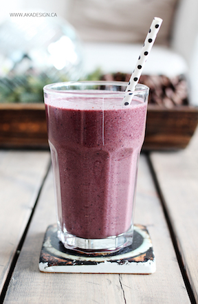
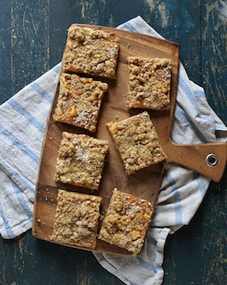

Banana Smoothie!

- Prep: 5 mins
- Cook: 10 mins
Ingredients
- 1/2 banana
- 1 cup of any frozen berries
- 1/2 almond milk
Instructions
- Place all ingredients in a blender and mix until smooth.
Cheddar Broccoli Egg Muffins!

- Prep: 10 mins
- Cook: 20 mins
Ingredients
- 4 eggs
- 1 cup steamed broccoli
- 1/2 cup sharp cheddar
- Sea salt and pepper
Instructions
- Preheat oven to 375 degrees. Coat a 6 hole muffin tin with oil.
- Chop broccoli and place it in a bowl with the eggs and sea salt + pepper if you desire those. Whisk together.
- Pour egg mixture into muffin tins and divide cheese evenly among them.
- Bake for 12-15 minutes, or until the eggs are set.
Almond Butter Granola Bars!

- Prep: 5 mins
- Cook: 20 mins
Ingredients
- 3/4 cup raw honey
- 1 cup raw almond butter
- 3 cups old fashioned oats
Instructions
- Heat the almond butter, honey in a saucepan on low heat until melted. Stir and remove from heat.
- Pour mixture over oats in a large bowl. Stir thoroughly.
- Pour and press batter into a 9 inch baking pan and bake at 350 degrees for 15 minutes
- Remove andlet cool.